Ce site web permet d'afficher et de controler des modules zigbee
compatible avec la clé de marque Phoscon.
Un menu vous permettra de naviguer entre vos prises, vos lumières ou
vos capteur présent dans votre maison.